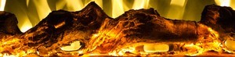
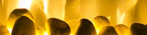

Kominek z wkładem gazowym to niezwykle komfortowe rozwiązanie, które nada wyjątkowego blasku całemu pomieszczeniu. Aby osiągnąć taki efekt, nie musisz poświęcać na to dużej ilości czasu, to wygoda użytkowania. W odróżnieniu do innych rodzajów urządzeń, kominek gazowy możesz zainstalować niemal w każdym miejscu. Gdy projektujesz nowy dom, nie musisz budować specjalnego komina pod wkład gazowy. Wystarczy podłączyć go do systemu koncentrycznego z rurami wykonanymi ze stali. Jest to możliwe z powodu użycia do opalenia paliwa innego niż w kominkach tradycyjnych. Z tego powodu nie musisz też czyścić paleniska z pyłu czy innych odpadków ze spalania. Wkład kominkowy gazowy – komfort i wysoka dbałość o estetykę. Teraz nie musisz szukać dedykowanej przestrzeni w domu, na której będziesz przechowywał drewno do opalenia kominka. Te urządzenia sterujesz za pomocą włącznika, bez potrzeby wcześniejszego rąbania drwa na deszczu czy przygotowywania paleniska. Teraz możesz korzystać z przyjemnego ciepła i światła prawdziwego ognia, właściwie nie poświęcając na to żadnego wysiłku. Jednocześnie wyjątkowy projekt każdego z kominków gazowych pozwala skupić się właśnie na wysokich walorach estetycznych, jakie daje nam ogień. Piękno i prostota w jednym. Kominek gazowy to połączenie naturalnego piękna i minimalizmu. Nasze produkty zostały zaprojektowane w taki sposób, by płomień idealnie wkomponowywał się w starannie wykonaną konstrukcję każdego urządzenia. Dzięki temu to właśnie ogień jest na pierwszym planie. Przyjemna, horyzontalna wizja ognia upodobni kominek z wkładem gazowym do dzieła sztuki, które doda blasku całemu pomieszczeniu.
Piec gazowy, zapewni ciepło i nie wpłynie negatywnie na środowisko. Nasze zasilane gazem urządzenia to doskonałe rozwiązanie dla wszystkich tych, którym na sercu leży dobro planety, a którzy nie chcą rezygnować ze stylowego, modnego źródła ciepła w swoim domu. W ofercie naszego sklepu znajduje się zarówno piec na gaz ziemny, jak i piec na LPG. Koza na gaz to rozwiązanie nowoczesne i stylowe. Łączy w sobie to, co najlepsze w ekologii i najprzyjemniejsze w posiadaniu tego typu kominka. Projektując nasze piece gazowe, zwróciliśmy uwagę nie tylko na design, ale też na to, by można było je wygodnie, komfortowo obsługiwać. I tak powstały piece na gaz ziemny i piece na LPG, które będę pasować do każdego wnętrza i sprawdzą się w każdej sytuacji. Zależy nam na bezpieczeństwie użytkowników. Dlatego właśnie nasze piece są wyposażone w zaawansowany system automatycznego sterowania gazem przy użyciu pilota. Rozwiązanie to pozwala zapobiec niekontrolowanym wyciekom paliwa. Najwyższy stopień spokoju zapewnia również hermetycznie zamknięta komora spalania i mechanizm, który automatycznie wyłącza piec gazowy przy wykryciu jakichkolwiek problemów z drożnością komina. System zabezpieczeń wieńczy doskonała szczelność urządzeń, którą gwarantują solidne spawy w osłonie gazu szlachetnego. Cały piec gazowy wykonany jest ze stali, której poszczególne elementy wycinane są laserowo i następne wyginane na giętarkach CNC. Piec na gaz ziemny i piec na LPG to wygoda i estetyka. Nasze urządzenia można kontrolować i regulować przy użyciu pilota z wbudowanym termostatem. Całość nie wymaga tradycyjnego komina. System przewodów koncentrycznych umożliwia zamontowanie kozy gazowej w pomieszczeniu bez komina (przewód należy wyprowadzić poza ścianę budynku lub dach). Co ważne, istnieje również możliwość czasowego zaprogramowania temperatury dobowej – nawet z siedmiodniowym wyprzedzeniem.

DRU jest czołowym europejskim producentem współczesnych kominków gazowych. DRU jest firmą o dumnej, 260 letniej historii ze wspaniałą reputację. DRU wyróżnia charakterystyczny design, innowacje techniczne i obsługa Klienta.
Wkład kominkowy na gaz posiada elektronikę Honeywell, z funkcją Eco Wave (do 50% oszczędności zużycia gazu). Sterowanie kominka możliwe jest za pomocą pilota, tabletu oraz współgra z systemem domu inteligentnego. Kominek pracuje w systemie zamkniętym i powinien być podłączony do kominka za pomocą rury koncentrycznej. Gwarancja: 2 lata na wszystko. Kraj pochodzenia - Holandia. DRU to marka w Rodzinie Spartherm.
Biokominki są to urządzenia pozwalające cieszyć się żywym płomieniem w każdej przestrzeni, od mieszkań i domów, poprzez ogrody i tarasy, po hotele i restauracje. Biokominki to przede wszystkim elementy dekoracyjne, stąd charakteryzują się atrakcyjnym designem i różnorodnymi formami. Wysoka jakość wykonania, bezpieczeństwo, nowoczesny styl i prostota użytkowania to najważniejsze cechy naszych biokominków. Oferujemy biokominki o różnym designie, kształcie i wielkości zarówno do zawieszenia na ścianie, zabudowy, jak i wolnostojące.
Biokominek to urządzenie niezwykle proste w montażu i wygodne w użytkowaniu, a cała jego obsługa ogranicza się do uzupełniania biopaliwa. Do zainstalowania i użytkowania biokominka nie jest potrzebna instalacja kominkowa, nie wymagane są żadne pozwolenia. Biokominek można zawiesić na ścianie, postawić w dowolnym miejscu lub zabudować w indywidualnie zaprojektowanej konstrukcji. Biokominki emitują jedynie ciepło, parę wodną oraz znikome ilości dwutlenku węgla (jak w wydychanym przez nas powietrzu). Biopaliwo składa się jedynie z produktów pochodzenia organicznego i posiada atest PZH.

Biokominek poprawia wilgotność powietrza w pomieszczeniu i nadaje się do aromaterapii, która niesie za sobą wiele korzyści: wzmacnia koncentrację, orzeźwia powietrze w pomieszczeniu, jest naturalną alternatywą dla chemicznych odświeżaczy powietrza, posiada również działanie lecznicze.

Wytwarzane w procesie spalania biopaliwa ciepło w 100% kierowane jest do pomieszczenia, stąd biokominek może stanowić również dodatkowe źródło ogrzewania. Ważną cechą biokominków jest fakt, iż pali się w nich żywy ogień, co stanowi ich przewagę nad elektrycznymi kominkami.
Bezpieczna biowkładka z wkładem absorbującym/chłonnym uniemożliwia rozlanie się paliwa nawet w przypadku przewrócenia pojemnika oraz zapewnia mniejsze zużycie paliwa. Możesz gasić i ponownie zapalać biokominek bez żadnego ryzyka, dzięki zamontowanej na stałe pokrywie pojemnika.
Nasze biokominki posiadają certyfikat bezpieczeństwa TÜV. Znak zgodności TÜV ceniony jest w większości krajów Europy. Jest on dowodem wysokiej jakości wyrobu oraz potwierdzeniem, że spełnia on obligatoryjne wymagania bezpieczeństwa. Dodatkowo znak zgodności TÜV gwarantuje, że procesy wytwarzania wyrobu monitorowane przez ekspertów TÜVRheinnland Polska, są realizowane na najwyższym poziomie techniczno-organizacyjnym.
Posiadamy ogromną ofertę kominków ściennych dzięki czemu każdy znajdzie coś dla siebie. Kominki różnią się wielkością, kształtem, kolorem, ilością efektów płomienia oraz ilością i rodzajem palenisk (polana, kryształki, kamienie).
polana
kryształki
kamienie

Największą część oferty stanowią prostokątne panoramiczne modele.
Najpopularniejszą część kominków ściennych stanowią kominki czarne, jednak w ofercie występują także białe, srebrne, brązowe.
Jeśli nie zależy nam na ogrzewaniu pomieszczenia warto zainteresować się grupą kominków bez funkcji grzania.
Osobną grupę kominków ściennych stanowią kominki trójstronne. Posiadają one imponujące trójstronne paleniska. W tej grupie dostępne są kominki Unique, Diamond, Imperial oraz Fusion Główną różnicą między nimi jest szerokość bocznych szyb. Wszystkie kominki można zabudować w ścianie.

Kominki elektryczne są niezwykle proste, gdy mowa o ich montażu. Należy po prostu rozpakować urządzenie, znaleźć dla nich odpowiednie miejsce, złożyć i włączyć do sieci elektrycznej. Całość prac zamyka się w kilkudziesięciu minutach. Nie trzeba tutaj myśleć o przewodach kominowych, nie ma potrzeby przygotowywania żadnych specjalistycznych instalacji elektrycznych. Kominek elektryczny ścienny montuje się przy użyciu specjalnej listwy montażowej dołączonej w zestawie z kominkiem.
Technologia LED w kominkach AFLAMO zapewnia bardzo niski koszt efektu płomienia, który wynosi około 1-2 gr/h zależnie od modelu. Czujnik otwartego okna wyłączy ogrzewanie, kiedy wyczuje nagły spadek temperatury. Dzięki temu nie marnujesz pieniędzy na niepotrzebne ogrzewanie.
Opti-Myst to jedyny w swoim rodzaju, w pełni trójwymiarowy efekt płomienia i dymu – doskonała iluzja, praktycznie niemożliwa do odróżnienia od prawdziwego ognia. Unikalna, opatentowana technologia wykorzystuje ultradźwięki do wytworzenia mgły wodnej która odpowiednio podświetlona daje efekt płomieni i dymu wydobywającego się z migoczącego paleniska kominka. Dzięki takiemu rozwiązaniu palenisko kominka jest bardziej przestrzenne a płomienie nie sprawiają wrażenia płaskich”. Realizm ognia dodatkowo podkreślony jest przez zastosowanie paleniska z efektem Optiglo – polana umieszczone w palenisku podświetlone są od wewnątrz za pomocą diod LED, dzięki czemu żarzą się i migoczą zupełnie jak płonące naturalne drewno. Kominki Opti-Myst to unikatowe połączenie realizmu kominków spalinowych z komfortem użytkowania charakterystycznym dla kominków elektrycznych. Są praktycznie bezobsługowe, nie wymagają skomplikowanego montażu i działają natychmiast po podłączeniu do prądu, należy pamiętać jedynie o regularnym napełnianiu zbiornika na wodę.
Opti-V to najnowocześniejsza, opatentowana technologia uzyskiwania efektu naturalnego ognia. Bazuje ona na połączeniu obrazu wyświetlanego na ekranie LCD wysokiej rozdzielczości oraz techniki wykorzystywanej przez iluzjonistów zwanej Duchem Peppera która sprawia, że palenisko wydaje się niezwykle przestrzenne a płomienie zyskują wrażenie trójwymiarowości. Wrażenie naturalności dodatkowo wzmaga delikatnie sączący się z głośników dźwięk trzaskających polan.